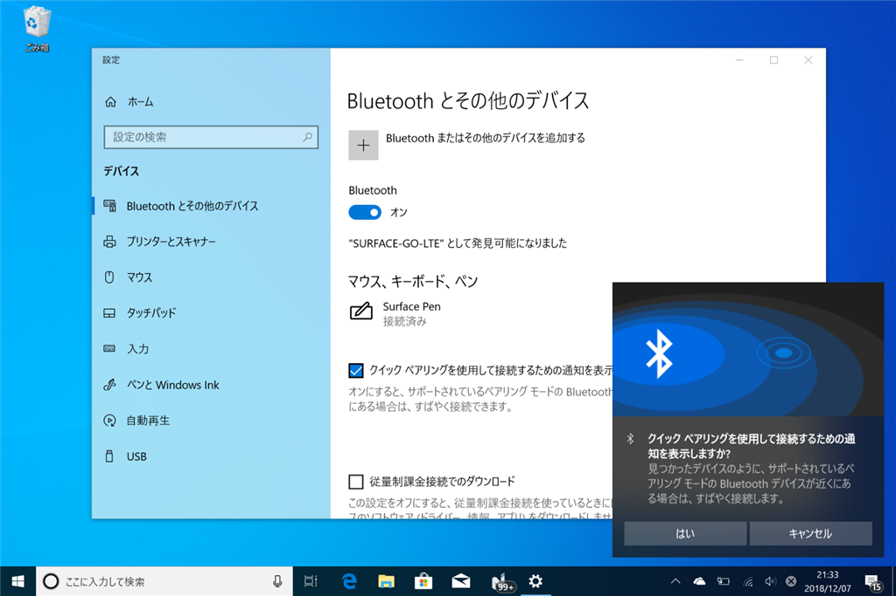
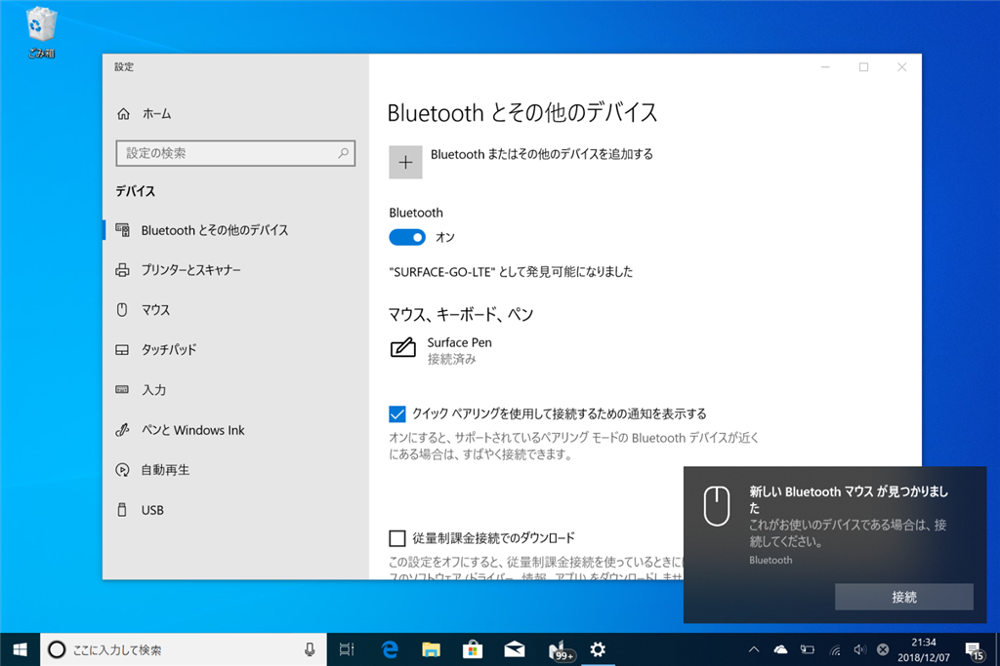
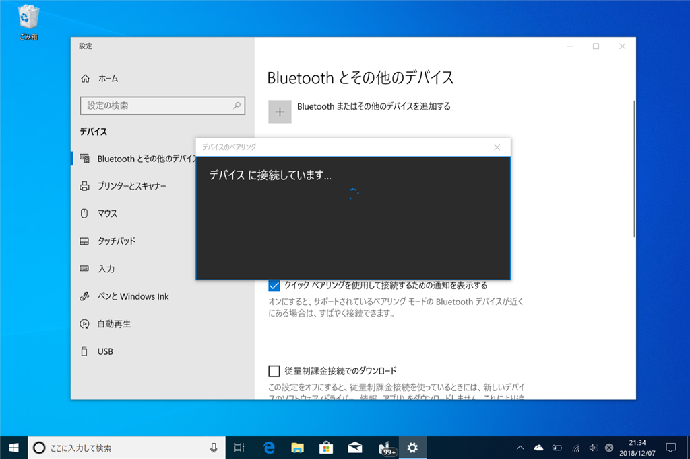
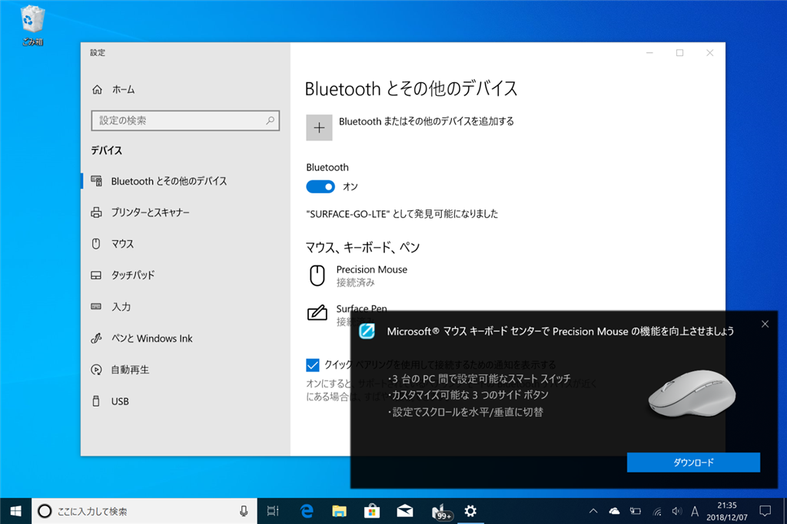

11月26日：Microsoft の Precision Mouse を買った
公開日：
11月末から仕事道具を実家（千葉県市川市）に送って仕事をしているのだけど、マウスを入れておくのを忘れてしまった。仕方ないのでこっちで新しいのを買ったが、いつものやつを買うのもなんか癪だったので、Microsoft Precision Mouse というのを買ってみた。ちょっと高くて、11,000 円ぐらい。

マイクロソフト マウス Bluetooth/USB有線 両対応 プレシジョン マウス ブラック カスタマイズ可能ボタン 磁気スクロールホイール 高精度 GHV-00007
- 出版社/メーカー: マイクロソフト
- 発売日: 2018/07/26
- メディア: Personal Computers
- この商品を含むブログを見る
特徴はざっとこんな感じらしい（機能美を追求した至高のマウス、ブラックのプレシジョン マウスが新登場。2018 年 7 月 26 日（木）より Amazon.co.jp で先行販売開始。 - Windows Blog for JapanWindows Blog for Japan より）。
- 計算しつくされた重量感、動作の安定性、そしてこの上ないスムーズなスクロール感
- 豊富な機能と、人間工学に基づき設計された疲れにくい製品形状により、長時間の利用時も作業効率を維持
- 最大 3 つのデバイスで切り替えなしに利用
- 動作遅延やバッテリー切れの心配がない有線、ケーブルレスでストレスフリーな無線（Bluetooth）の両対応
- 4 つのカスタマイズ可能なボタン
個人的には有線も無線でも使えるのがポイント高いかな？ この2週間ほど使った限りでは Bluetooth で快適に使えているけれど、なんとなく Bluetooth はまだ信用ならんなと思ってるし。あと、デバイスの切り替え機能が割とよかった。
底面にあるインジケーターで、どのデバイスとつながるのかがわかる。最新の Windows 10 ならば接続も簡単だしな。キーボードマウスセンターのインストールまでシームレスにできる（うちに入ってるのは v10 だけど、昨日か一昨日だかに v11 がでた）。




で、肝心の使い勝手だけど――使い始めはちょっと重かったかな……重量というより、摩擦？ Age of Empirte:HD で2時間弱ほど遊んでみたけど、ちょっと肩凝った。でも、次第になじんできたようで、今はそれほど不満を感じない。「計算しつくされた重量感」かと言われれば、そうは思わないと答えるけど、まぁ、悪くはない。
大きさはちょうどいい～大きすぎるの間ぐらい。自分は手で「掴む」というよりは、完全に手を「乗せて」使ってる。自分はこれでも不満はない。
感度の調整は興味ないから評価の対象外。ガチで FPS やら MMO やる人には関係あるのかもしれんけど、わいの場合はいいところ AoE ぐらいしかやらんし。
カスタムボタンは、前の（仮想）デスクトップ・次のデスクトップに設定するのが気に入った（デフォはブラウザーの戻る・進む）。これまではキーボードショートカットやタッチパッドの3本指ジェスチャーを使うことが多かったけど、デスクトップではマウスのカスタムボタンを使うようになった。
あと、ホイールのところのボタンでクリクリスクロールとブワーっていう（慣性）スクロールが切り替えられるのはいいかも。自分はクリクリ感のあるホールの方が断然好みだけど、使ってみるとブワーっていう方も悪くない。とくに、長い PDF を斜め読み（スクロール読み？）するときなんかは、慣性スクロールの方が操作数少なくていい。ぶっちゃけほとんどの人にとってはオーバースペックなこの機能だけど、さすが1万円越えだなって思った。
結論としては、クリクリスクロールだけのを 6,000 円で売ってくれるならスペアを買いだめしたいかも。10,000 円越えはちょっと……あとの評価は耐久性次第かな。3年でバカになるならちょっとお勧めできないけど、5年持つなら次もこれを買う（売ってるだろうか……？）。